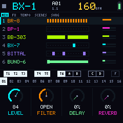
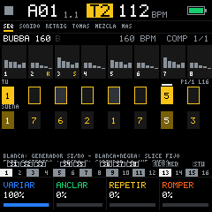
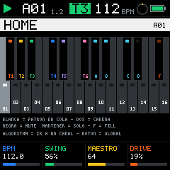
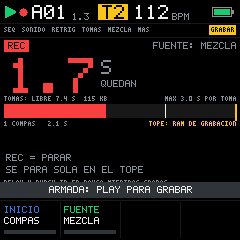
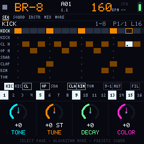
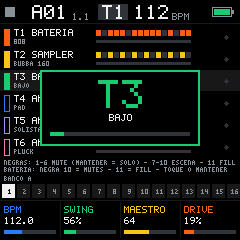
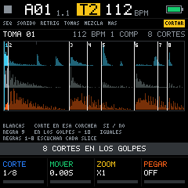
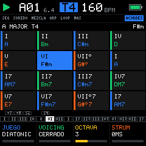
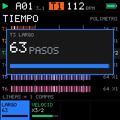

Free firmware for your M-VAVE FM-1
Turns the FM-1 into a six-track live groovebox: TR drums, a sampler, a bass and three synths, each with its own length and its own speed. Original code and sounds, licensed under the GPL-3.0.

The 240×240 screen, as it is
These are real firmware screenshots, generated by the automated tests. The screens are in Spanish for now.








Six tracks to play live
Everything is designed around the FM-1 controls: three big knobs, four small ones, fourteen buttons and 27 keys with LEDs.
TR drums
Modeled drums (808, 909 and SINTE), computed live. Accent, repeats, flam, per-step P-Locks and steps that only play in the fill. Roll and erase while playing.
Sampler 3.0
A take in 16 slices, with a SLICER to play them and a generator that rearranges them bar by bar. A dedicated recorder and a take library.
Bass
ANALOG with glide, 303-style ACID or 6-operator FM, plus an unquantized note looper.
Three free tracks
ANALOG, FM, ACID, KIT (another drum machine) or MIDI. Arpeggiator, a scale per track and a chord grid that shows what goes with what.
Four gestures per button
Tap, hold (with the keyboard drawn), 2 s and HOME + button. Holding HOME is the controller on any screen.
Scenes and effects
Four scenes with chains and song recording, automatic fills and 16 punch-in effects.
Everything around the firmware
Bubba Machine is more than a file to flash. This is what already exists and what is coming.
Web emulator
The full firmware in your browser, compiled to WebAssembly. Nothing to install.
Open the emulatorFM-1 firmware
Runs on the device since 0.4.0-beta. Tested on a single FM-1; an update may erase what you saved.
InstallAudio quality
44.1 kHz end to end, a floating-point mix and sounds computed live. What improved, what it costs and what is missing.
The detailsInterface 3.0
Four gestures per button, HOME everywhere, a sampler with a generator and a recorder with a take library. In the emulator since 0.3.0.
Why it works this wayEditor and sound packs
Load patterns, samples and loops over USB, and free kit and loop packs made by the community.
RoadmapYours to study, change and share
Bubba Machine is released under the GNU General Public License v3.0 or later.
- Original code, written from scratch. Only hardware facts from public FM-1 reverse engineering were used. Credits.
- Original sounds. Drums and synths are computed live: the firmware ships no third-party audio.
- Always with its source. Any version that is distributed, modified ones included, has to publish its code.
- Tested. Over 500 automated checks run on every change.